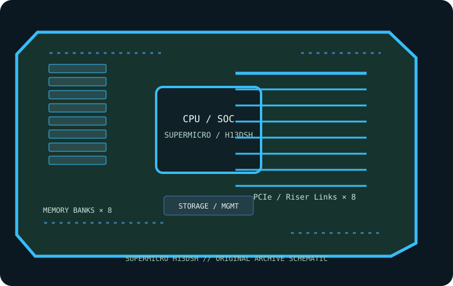

[ INDIVIDUAL COMPONENT // MOTHERBOARDS ]
Supermicro H13DSH
Dual-SP5 server board designed around supported AMD EPYC 9004-series processors and a chassis/riser-specific expansion layout. This page records the exact printed model and revision policy with manufacturer references.

MODEL / REVISION: Exact base model H13DSH; confirm board/assembly revision on the PCB and chassis label before firmware selection. This proprietary board is not interchangeable with similarly named H13 variants.
Specifications
| Exact model / revision | Supermicro H13DSH — Exact base model H13DSH; confirm board/assembly revision on the PCB and chassis label before firmware selection. This proprietary board is not interchangeable with similarly named H13 variants. |
|---|---|
| CPU and socket | Two Socket SP5 processors; install a matched supported AMD EPYC 9004-series pair per Supermicro CPU and BIOS guidance. CPU family and stepping determine lane/memory capabilities. |
| Chipset / platform | AMD SP5 platform; chipset/I/O functions are specified in the H13DSH manual and block diagram. |
| Board size | Proprietary, approximately 432 × 292 mm (17 × 11.5 in); requires the corresponding Supermicro chassis and riser layout, not a standard ATX case. |
| Memory / ECC / registered | Twenty-four DDR5 ECC Registered DIMM sockets across the two processors; up to 12 channels per CPU. DIMM population and speed are CPU, rank, revision and validated-module dependent; RDIMM/3DS RDIMM only. |
| PCIe / lanes | Riser connectors and multiple PCIe 5.0 MCIO x8 links rather than ordinary desktop slots; lane assignment depends on riser and board/chassis configuration. See the H13DSH block diagram. |
| Storage | MCIO connections provide mixed PCIe/SATA routing; onboard M.2 sockets use platform-specific PCIe links. Do not assume every MCIO can be wired as SATA and PCIe simultaneously; follow manual port-mode table. |
| Networking / BMC | Dedicated 1GbE management LAN and ASPEED AST2600 BMC/IPMI; host networking depends on installed riser/network modules and chassis configuration. |
| Firmware / compatibility | This is a proprietary dual-socket server board: install matched supported processors, fully populate each CPU’s required memory channels and use qualified risers/chassis. Check H13DSH firmware, CPU stepping and BMC files. Do not assume board operates in a consumer tower or with generic PCIe brackets. |
Compatibility and revision notes
This is a proprietary dual-socket server board: install matched supported processors, fully populate each CPU’s required memory channels and use qualified risers/chassis. Check H13DSH firmware, CPU stepping and BMC files. Do not assume board operates in a consumer tower or with generic PCIe brackets.
Before installation, verify the physical revision and assembly label, CPU support list and minimum BIOS; confirm the exact memory type (UDIMM versus registered DIMM), channel population, chassis form factor, PCIe lane routing and storage connector modes against the linked vendor manual. A mechanically compatible socket does not guarantee CPU, firmware, ECC or lane compatibility.
Preservation and service
Record BIOS and BMC versions, serial and MAC labels, installed processors and DIMM part numbers, risers/cables, and test conditions. Use ESD-safe handling, correct socket procedure and chassis airflow. Do not cross-flash firmware from a similarly named board or revision.
Sources & further reading
- Supermicro — H13DSH product specificationsManufacturer reference for the exact board model; use its support/QVL/manual details to verify population and compatibility.
- Supermicro — H13DSH manuals, compatibility and firmware resourcesManufacturer reference for the exact board model; use its support/QVL/manual details to verify population and compatibility.
Manufacturer model-specific references take precedence. Recheck CPU support, QVL, lane tables and current firmware for the printed board revision before service.